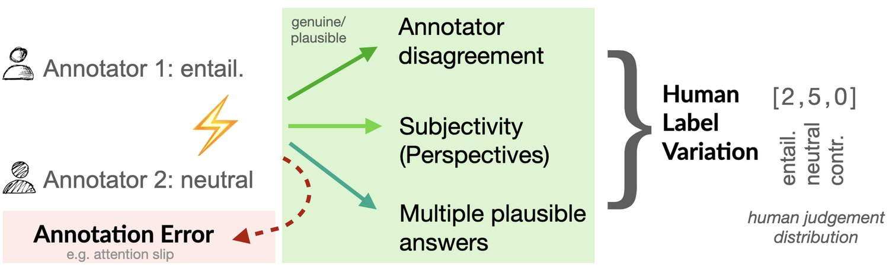
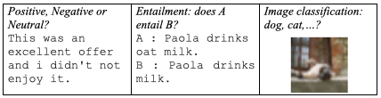
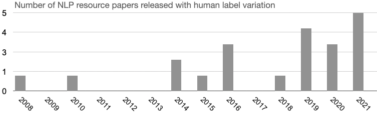

Human variation in labeling is often considered noise. Annotation projects for machine learning (ML) aim at minimizing human label variation, with the assumption to maximize data quality and in turn optimize and maximize machine learning metrics. However, this conventional practice assumes that there exists a ground truth, and neglects that there exists genuine human variation in labeling due to disagreement, subjectivity in annotation or multiple plausible answers. In this position paper, we argue that this big open problem of human label variation persists and critically needs more attention to move our field forward. This is because human label variation impacts all stages of the ML pipeline: data, modeling and evaluation. However, few works consider all of these dimensions jointly; and existing research is fragmented. We reconcile different previously proposed notions of human label variation, provide a repository of publicly-available datasets with un-aggregated labels, depict approaches proposed so far, identify gaps and suggest ways forward. As datasets are becoming increasingly available, we hope that this synthesized view on the “problem” will lead to an open discussion on possible strategies to devise fundamentally new directions.
In Natural Language Processing (NLP) much progress today is driven by fine-tuning large pre-trained language models using an annotated dataset, assumed to be representative for a target language task of interest Schlangen (2021). This is analogously so in Machine Learning (ML) and Computer Vision (CV), where the target tasks differ, yet the conceptual pipeline remains the same: data, modeling, evaluation. Despite the importance of annotated data—as it fuels all steps in this pipeline—a crucial assumption of today’s learning systems is to rely on a single gold label per instance. The gold label is obtained by aggregation (e.g. majority vote) of labels crucially provided by humans.
@goptd@color\pc@hyenc@colorpdfcommentcolor\HyColor@XZeroOneThreeFour\pc@goptd@fontcolor\pc@hyenc@fontcolorpdfcommentcolor\HyColor@XZeroOneThreeFour\pc@goptd@icolor\pc@hyenc@icolorpdfcommentcolor\pdfmark[

]pdfmark=/ANN,Subtype=/Widget,Raw=/TU (Screenreader caption: Schematic of human label variation vs annotation errors. Disagreement in annotation can be due to genuine annotator disagreement, subjectivity or simply because two (or more) views are plausible. \textCR(\pc@goptd@deadline)) /T (tooltip zref@0) /C [ ] /FT/Btn /F 768 /Ff 65536 /H/N /BS << /W 0 >>The assumption of a ground truth (and taking the majority vote or the ‘mode’ of the human judgement distribution) makes sense when humans involved in labeling highly agree on the answer to the questions, such as “Does this image contain a bird?”, “Is ‘learn’ a verb?”, “What is the capital of Italy?". However, this assumption often does not make sense—especially when language is involved. For example, on questions determining a word sense, questions such as “Is this comment toxic?” or questions involving understanding indirect answers to polar questions like “Q: Hey. Everything ok?” “A: I’m just mad at my agent” (see more examples in Figure 2). While some disagreement is due to human labeling errors (cf. Figure 1 arrow to the left and § 3), an increasing body of work has shown that irreconcilable variation between annotations is plausible and abundant Plank et al. (2014b); Aroyo and Welty (2015); Pavlick and Kwiatkowski (2019); Uma et al. (2021b) (illustrated in Figure 1). The observed variation can indeed be disagreement due to difficult cases, subjectivity or cases where multiple answers are plausible (cf. § 2). We argue that human label variation (Hlv) provides rich information that should not be discarded. Critically, to rely on a ground truth means we tacitly agree to continue: i) to create datasets that encode a single ground truth, ii) to develop models that are optimized towards a single preferred output, and iii) to evaluate models against a single ground truth. By continuing to do so, we might ask ourselves if we are climbing the right hill–or whether continuing to model a single ground truth hampers progress.
In this position paper, we argue that neglecting variation in labeling is problematic, as it impacts all steps of the pipeline. Traditionally, this variation has been considered a problem. We underline emerging works that instead believe this issue to be an opportunity. In fact, we believe it is essential to take human label variation into account for progress. Human labels are bound to be scarce yet at the same time critical as they provide human interpretations and values. Therefore, embracing it is necessary for human-facing NLP, i.e., technology which is by and for humans; inclusive and reliable. However, the research landscape is fragmented, and approaches often focus on either steps of the pipeline. Therefore, in this paper we focus on the three core aspects of the pipeline: data, modeling and evaluation. In particular, i) we distill some of the on-going discussions in disparate (sub-)fields and propose a unified term; ii) we present and work out suggestions for each for the future; and iii) we provide a comprehensive repository of publicly-available data sets that allow studying human label variation, and invite the community to contribute.
High-quality data is essential for any empirical scientific inquiry and has to satisfy the requirements of validity and reliability Krippendorff (2018); Pustejovsky and Stubbs (2012); Schlangen (2021). However, for almost all tasks in NLP and CV irreconcilable disagreement between annotators has been observed Uma et al. (2021b). In light of this, the original definition of data reliability is questionable—it assumes labels follow a given standard. We might ask which standard?
Human annotations are needed to ground and make sense of language, images, speech etc. However, labelling data is difficult, particularly when dealing with an object of study as complex as language. Take the illustration in Figure 2 as example. While categories exist, their boundaries are fluid, or simply multiple options are plausible.
We define human label variation (Hlv) as plausible variation in annotation, see Figure 1, to reconcile different notions found in the literature (discussed next). We prefer ‘variation’, because ‘disagreement’ implies that two (or more) views involved cannot all hold. In contrast, errors are annotation differences, due to amongst others attention slips. Crucially, Hlv assumes humans usually provide their best judgements, and variation emerges due to, e.g., ambiguity of the instance, uncertainty of the annotator, genuine disagreement, or simply the fact that multiple options are correct. Aggregation obfuscates this real-world complexity.
@goptd@color\pc@hyenc@colorpdfcommentcolor\HyColor@XZeroOneThreeFour\pc@goptd@fontcolor\pc@hyenc@fontcolorpdfcommentcolor\HyColor@XZeroOneThreeFour\pc@goptd@icolor\pc@hyenc@icolorpdfcommentcolor\pdfmark[

]pdfmark=/ANN,Subtype=/Widget,Raw=/TU (Screenreader caption: The figure illustrates three hard cases. Case 1: What is the sentiment (positive, neutral, negative) of ‘This was an excellent offer and i didn’t not enjoy it’. Case 2: Does A entail B? ‘A: Paola drinks oat milk’ ‘B: Paolo drinks milk.’. Case 3: It shows a low-resolution image, the question is whether it is a cat or a dog or another animal.\textCR(\pc@goptd@deadline)) /T (tooltip zref@1) /C [ ] /FT/Btn /F 768 /Ff 65536 /H/N /BS << /W 0 >>Hlv has been studied in CV, where it is dubbed human uncertainty Peterson et al. (2019), as well as in human-computer interaction (HCI) as disagreement or contested labels Gordon et al. (2021). In NLP, variation has been acknowledged as annotator disagreement already in early works on resolving disagreement Poesio and Artstein (2005), particularly in pragmatics and discourse de Marneffe et al. (2012); Webber and Joshi (2012); Das et al. (2017). Hlv in NLP is discussed both from the linguistic side as hard cases Zeman (2010); Plank et al. (2014b), difficult linguistic cases Manning (2011), as judgements which are not always categorical de Marneffe et al. (2012), inherent disagreement Pavlick and Kwiatkowski (2019); Davani et al. (2022) and justified and informative disagreement Sommerauer et al. (2020). Variation in NLP is also discussed in connection to subjectivity, e.g., as a range of reasonable interpretations (CrowdTruth) Aroyo and Welty (2015), as one or many beliefs Rottger et al. (2022), the social dimensions of annotators like their demographic Sap et al. (2019); Larimore et al. (2021); Sap et al. (2022) and cultural backgrounds Hershcovich et al. (2022), often discussed more generally as different perceptions in data perspectivisim Basile et al. (2021a); Wich et al. (2021). Moreover, there is work that acknowledges that multiple plausible answers are correct, such as works on the collective human opinion Nie et al. (2020) influenced by seminal work that looks at the human judgement distribution Pavlick and Kwiatkowski (2019) who found plausible variation in at least 20% of their data. Earlier work on veridicality also made this point de Marneffe et al. (2012). The fact that multiple plausible annotations exist has also been put forward as a range of acceptable annotations Palomaki et al. (2018). The known variation in annotation for subjective tasks is at least a decade old Alm (2011). They suggest that in the absence of a real ‘ground truth’, acceptability may be a more useful concept than ‘right’ and ‘wrong’. Capturing the Hlv, instead of the global majority, aligns with this viewpoint.
To make progress, we need to i) collect and release annotator-level (un-aggregated) labels, ii) document dataset creation, and iii) include as much meta-data as possible. In particular, we urge the community to release annotator-level (un-aggregated) labels–even if only for a small subset of the data–and thus we echo Basile et al. (2021b) and Prabhakaran et al. (2021) (also in Denton et al. (2021)) who independently raised this point as well.
As a concrete starting point, we provide a comprehensive overview of existing datasets with multiple annotations in the appendix, which we release as a github repository to encourage uptake. Moreover, if possible to release responsibly, besides making data statements of datasets available Bender and Friedman (2018), we encourage the community to include annotator-level background information Prabhakaran et al. (2021) and document the annotation process Geiger et al. (2020). In general, we believe there is high value in releasing any meta-data available (ideally on the instance level, e.g. source, time of document, annotator ids, annotation completion time etc). For example, in a recent study we created a new relation extraction corpus with instance-level flags of annotator uncertainty proving valuable for evaluation Bassignana and Plank (2022). Similarly, we asked the annotator to provide free-text rationales of relations, which recently was also put forward in Borin (2022), referring to earlier work on collecting annotator rationals during annotation McDonnell et al. (2016).
We believe that the more, richer datasets become available, the more insights can be generated into the capabilities of models and their limitations. New algorithms may emerge capable of learning from fewer but richer sources. On a related line, collecting multiple annotations calls for research in estimating data quality and revisiting agreement measures; e.g., new measures for multiple-labels were recently proposed Marchal et al. (2022).
There is a growing literature on methods on how to deal with Hlv in learning. We categorize them into two camps: those that resolve variation, and those that embrace it. We will draw connections to surveys and the emerging literature, and discuss adoption of methods as well as gaps.
The first big camp of research aims at resolving human label variation and includes: 1) Aggregation and 2) Filtering. It considers Hlv as “problematic” or “noisy”. Consequently, a single (aggregated) label is obtained with presumably high agreement as the ground truth. Aggregation is performed via majority voting or probabilistic aggregation methods, see Paun et al. (2022) for a survey and seminal works Dawid and Skene (1979); Qing et al. (2014); Artstein and Poesio (2008). Aggregation is still the most widely-adopted solution for the problem today. However, aggregation by definition allows only one belief/label/category. This is very limiting, as often it is not just about disagreement or matter of subjectivity, but multiple options being plausible. Filtering methods are advocated by some with the idea to remove data instances with low agreement Reidsma and Carletta (2008); Reidsma and op den Akker (2008); Beigman Klebanov et al. (2008); Beigman and Beigman-Klebanov (2009). However, only using high-agreement instances can yield worse performance Jamison and Gurevych (2015) and it wastes data.
The second camp of research instead aims at embracing human label variation. Two broad directions include: 3) Learning from un-aggregated labels (directly), or 4) Enriching gold with human label variation. With regard to learning from un-aggregated labels, methods of varying complexity exist, from model-agnostic methods such as repeated labeling Sheng et al. (2008) used by e.g. de Marneffe et al. (2012), to architecture-specific choices, e.g., adding a crowd layer Rodrigues and Pereira (2018), learning from soft labels Peterson et al. (2019) and more; see the survey of Uma et al. (2021b). So far learning from un-aggregated labels directly has shown greater promise in classification tasks in CV than in NLP Uma et al. (2021b) (evidence is scarce, see open issues). Within NLP, a more studied direction is currently to enrich the gold label with human label variation, i.e., to learn from both the gold and the un-aggregated labels. Methods in this category can be seen as part of the broader set of well-known regularization methods in ML, and for NLP include e.g., cost-sensitive loss weighting Plank et al. (2014a), variants of multi-task learning Cohn and Specia (2013); Fornaciari et al. (2021); Davani et al. (2022), or sequential fine-tuning Lalor et al. (2017). These methods further differ in how they use un-aggregated labels, i.e., as confusion matrices estimated from a small sample Plank et al. (2014a), as annotator-level auxiliary tasks requiring the full data with multiple labels Cohn and Specia (2013); Davani et al. (2022), or as single “soft-label” auxiliary task that captures the per-instance human label distribution Fornaciari et al. (2021).
@goptd@color\pc@hyenc@colorpdfcommentcolor\HyColor@XZeroOneThreeFour\pc@goptd@fontcolor\pc@hyenc@fontcolorpdfcommentcolor\HyColor@XZeroOneThreeFour\pc@goptd@icolor\pc@hyenc@icolorpdfcommentcolor\pdfmark[

]pdfmark=/ANN,Subtype=/Widget,Raw=/TU (Screenreader caption: The graph shows a bar chat with counts of NLP paper per year that release unaggregated labels. The plot suggests an upward trend.\textCR(\pc@goptd@deadline)) /T (tooltip zref@2) /C [ ] /FT/Btn /F 768 /Ff 65536 /H/N /BS << /W 0 >>Undoubtedly, there is increasing interest in studying methods to learn with human label variation (see Figure 3 for our analysis of research papers). However, existing research is fragmented across (sub)-disciplines. We identify at least three diverse areas within NLP, with little to no overlap (as shown in Table 1 in the Appendix), focusing respectively on: subjectivity Basile et al. (2021a) (pdai.info, SemEval 23), natural language inference (NLI) Pavlick and Kwiatkowski (2019); Nie et al. (2020), and both NLP and CV (JAIR & SemEval 21). To the best of our knowledge, only the latter work and shared task so far bridges across disciplines Uma et al. (2021b); Uma et al. (2021a). Still, they focus on complementary NLP tasks to the two previous initiatives. It is thus an open issue to see whether tasks might need to have specific properties to be suitable for one kind of method over another. A comprehensive evaluation is lacking. Studying transferability of methods across problems is another interesting open issue.
Learning from Hlv heavily depends on data labeled with multiple annotators. In some settings, it might be difficult to obtain sizeable amounts of such data (however, as seen in Section 2, more datasets are emerging). Regarding learning, Lalor et al. (2017) find that even small amounts of data can be helpful in a sequential fine-tuning setup, as also early work indicates Plank et al. (2014a). An open challenge is to find the right balance between the amount of data collected and the number of annotators. Overall, we hypothesize that the richness of information captured by human label variation has the potential to reduce data size requirements (possibly fewer instances but with more information captured in the human label distribution). It remains an open issue to connect with emerging works on learning with different amounts of annotation Zhang et al. (2021), which can also lead to novel architectures.
A related important challenge is to tease apart errors from signal (Reidsma and Carletta, 2008; Gordon et al., 2021, e.g.). Work on annotation error detection exists, cf. the very recent survey by Klie et al. (2022) or Zhang and de Marneffe (2021). It is though largely overlooked. This calls further for theoretical work on the notion of an what constitutes an error versus a hard case Manning (2011); Webber and Joshi (2012); Plank et al. (2014b). This bears connections to emerging work in HCI, in particular social computing Gordon et al. (2021); Gordon et al. (2022), who look at the perception of system errors by humans, see also Section 4, and earlier work in HCI on crowdsourcing that allows for some errors Krishna et al. (2016).
While embracing human label variation helps to regularize learning, the connection to a broader range of ML methods such as noise labeling or calibration remains highly relevant and a source of further inspiration Goldberger and Ben-Reuven (2016); Han et al. (2018b); Han et al. (2018a); Meister et al. (2020). There are some initial studies that compare human disagreement with model confidence Davani et al. (2022). Overall, interest in calibration methods Naeini et al. (2015); Guo et al. (2017) is increasing Desai and Durrett (2020); Kong et al. (2020); Jiang et al. (2021) to counter overconfidence of neural classifiers Meister et al. (2020). In contemporary work to this, we show that measuring calibration to human majority given inherent disagreements is theoretically and empirically problematic Baan et al. (2022). As a first step, we propose instance-level measures of calibration that better capture the human label distribution. In future, it remains to be seen how to best use human label variation to make systems more trustworthy.
Finally, there is relevant interesting work that more deeply looks at data during learning. In NLP, recent seminal work by Swayamdipta et al. (2020) proposes data maps to investigate the behavior of a model on individual instances during training (training dynamics). They show that training a system on ambiguous instances identified via data maps helps to generalizes better in out-of-distribution evaluation Swayamdipta et al. (2020). Building on top of this work, Zhang and Plank (2021) show that the instances at the boundary of hard and ambiguous cases derived from small data maps aids active learning. This is further evidence that human uncertainty in labeling is beneficial for learning. It remains to be seen whether training dynamics can yield novel architectures for learning from Hlv.
Evaluation is of critical importance in empirical research fields such as ML, NLP and CV. It helps to choose one system over another, and to measure progress. However, current evaluation practices typically use accuracy against a gold standard. In many tasks this common practice is severely flawed. It obfuscates the truth about the state of ML models. It leaves a large gap between in-vitro and in-vivo evaluation. HCI research has shown that metrics are not aligned with reality; audits of algorithms’ performance have uncovered very poor results in practice, and that this disconnect is indicative of a larger disconnect on how ML and HCI researchers evaluate their work Gordon et al. (2021). We believe this is an important take-away for NLP. We too often focus on single metrics, single components of the pipeline, in other words, on myopic in-vitro experimentation.
Despite the increasing body of literature on methods for learning with Hlv, a majority of the papers introducing new methods strikingly evaluate against hard labels (gold labels) (Rodrigues and Pereira, 2018; Fornaciari et al., 2021, e.g.). If we want to take human label variation seriously, we need to shift our attention to evaluation that goes beyond hard labels (accuracy). As accuracy of all models can be high (at times), looking at only one metric (and, in fact a single—argmax—prediction) gives no indication on how reasonable a model is, yet alone how confident and trustworthy it is.
Research in ML, CV and NLP has started to incentivize hard and soft label evaluation. Soft labels compare the human label distribution to model outputs. Proposed soft metrics include: cross entropy, to capture how well the model captures humans’ assessment not just of the top label, which is used in both CV Peterson et al. (2019) and NLP Pavlick and Kwiatkowski (2019); entropy correlation proposed by Uma et al. (2020), to compute Pearson’s correlation between instance-level entropy scores of human soft labels and model predictions; Kullback-Leibler divergence-based evaluation Nie et al. (2020) (either KL or Jensen-Shannon). Others instead started to evaluate against individual annotators Resnick et al. (2021); Davani et al. (2022), measure F1 scores against data splits by different annotator agreement levels Leonardelli et al. (2021); Damgaard et al. (2021), data splits based on annotator clustering Basile et al. (2021a), data splits based on item difficulty based on entropy of the label distribution and semantic distance Jolly et al. (2021), and data splits based on annotator uncertainty flags Bassignana and Plank (2022). Analogously as in Section 3, it is an open issue to see whether tasks might need to have specific properties to be more suitable for one kind of evaluation over another. In general, we need better evaluation practices (besides soft and hard evaluation), particularly in light of the complexity of human label variation—and the reasons it arises, which might be due to uncertainty, background, task complexity, intra-coder reliability etc; see Basile et al. (2021b) and in particular Jiang and de Marneffe (2022) for a discussion on disagreement sources; the latter recently developed a taxonomy for disagreement in natural language inference data.
In this paper, we outline that human label variation impacts all steps of the traditional ML pipeline, and is an opportunity, not a problem. To move forward, we argue for a more comprehensive treatment of Hlv, which considers all steps, to enable innovation: data, modeling and evaluation. To do so, and truly move beyond the current in-vitro setups, we need an open, inter-disciplinary discussion. We hope to contribute to this discussion, and stipulate research with the released repository: https://github.com/mainlp/awesome-human-label-variation.11 1 The repository contains the datasets in Appendix 1 as a starting point. This is, to the best of our knowledge, the most comprehensive list of datasets with un-aggregated labels available today. We encourage readers to contribute. They are further invited to join the SemEval 2023 shared task LeWiDi: https://le-wi-di.github.io/
This position paper tries to be succinct while aiming at synthesizing a very broad notion—human label variation—that affects all steps dealing with learning from annotated data. Therefore, this position paper is necessarily incomplete, as is the dataset repository that is provided. However, we hope that the repository and paper will lead to an open discussion and community uptake, as this is a big open issue and necessitates a broader, inter-disciplinary treatment.
Modeling human label variation is connected to social bias, as annotator backgrounds influence annotations and consequently both machine learning and evaluation. Therefore it is important to be aware of possible social implications of some of the technologies discussed here. Inevitably there is potential for dual use, as amplifying the voice of some might harm others. However, there are social opportunities, as modeling human label variation allows to include the voices of more groups, and even the very underrepresented. In a world where the majority view dominates, these would otherwise be left behind.
We thank the reviewers for their feedback. Special thanks to Bonnie Webber, Massimo Poesio and Raffaella Bernardi for invaluable feedback on drafts of this paper and discussions on this topic, in parts at the Insights workshop@ACL 2022. Thanks to members of the NLPnorth & MaiNLP lab for feedback on this paper. BP is supported by ERC Consolidator Grant DIALECT 101043235.
| Field | Reference | Name/Description | URL | Jair | PDAI | SemEval21 | TACL22 | SemEval23 |
|---|---|---|---|---|---|---|---|---|
| NLP | Passonneau et al. (2010) | Word sense disambiguation (WSD) | https://anc.org/ | |||||
| Plank et al. (2014a) | POS tagging (500 tweets from Lowlands) and Gimpel-POS dataset | https://bitbucket.org/lowlands/costsensitive-data/ and https://zenodo.org/record/5130737 | ||||||
| Derczynski et al. (2016) | NER Broad Twitter dataset | https://github.com/GateNLP/broad_twitter_corpus | ||||||
| Rodrigues and Pereira (2018) | NER dataset, re-annoted sample of CoNLL 2003 | http://fprodrigues.com//publications/deep-crowds/ | ||||||
| Martínez Alonso et al. (2016) | Supersense tagging | https://github.com/coastalcph/semdax | ||||||
| Berzak et al. (2016) | Dependency Parsing, WSJ-23, 4 annotators | https://people.csail.mit.edu/berzak/agreement/ | ||||||
| Peng et al. (2022) | GCDT, Mandarin Chinese discourse treebank | https://github.com/logan-siyao-peng/GCDT/tree/main/data | ||||||
| Bryant and Ng (2015) | Grammatical error correction | http://www.comp.nus.edu.sg/~nlp/sw/10gec_annotations.zip | ||||||
| Poesio et al. (2019) | PD (Phrase Detectives dataset): Anaphora and Information Status Classification | https://github.com/dali-ambiguity/Phrase-Detectives-Corpus-2.1.4 | ||||||
| Dumitrache et al. (2018) | Medical Relation Extraction (MRE) | https://github.com/CrowdTruth/Open-Domain-Relation-Extraction | ||||||
| Bassignana and Plank (2022) | CrossRE, relation extraction, small doubly-annotated subset | https://github.com/mainlp/CrossRE | ||||||
| Dumitrache et al. (2019) | Frame Disambiguation | https://github.com/CrowdTruth/FrameDisambiguation | ||||||
| Snow et al. (2008) | RTE (recognizing textual entailment; 800 hypothesis-premise pairs) collected by Dagan et al. (2005), re-annotated; includes further datasets on temporal ordering, WSD, word similarity and affective text | https://sites.google.com/site/nlpannotations/ | ||||||
| Pavlick and Kwiatkowski (2019) | NLI (natural language inference) inherent disagreement dataset, approx. 500 RTE instances from Dagan et al. (2005) re-annotated by 50 annotators | https://github.com/epavlick/NLI-variation-data | ||||||
| Nie et al. (2020) | ChaosNLI, large NLI dataset re-annotated by 100 annotators | https://github.com/easonnie/ChaosNLI | ||||||
| Demszky et al. (2020) | GoEmotions: reddit comments annotated for 27 emotion categories or neutral | https://github.com/google-research/google-research/tree/master/goemotions | ||||||
| Ferracane et al. (2021) | Subjective discourse: conversation acts and intents | https://github.com/elisaF/subjective_discourse | ||||||
| Damgaard et al. (2021) | Understanding indirect answers to polar questions | https://github.com/friendsQIA/Friends_QIA | ||||||
| de Marneffe et al. (2019) | CommitmentBank: 8 annotations indicating the extent to which the speakers are committed to the truth of the embedded clause | https://github.com/mcdm/CommitmentBank | ||||||
| Kennedy et al. (2020) | Hate speech detection | https://huggingface.co/datasets/ucberkeley-dlab/measuring-hate-speech | ||||||
| Dinu et al. (2021) | Pejorative words dataset | https://nlp.unibuc.ro/resources or http://pdai.info/ | ||||||
| Leonardelli et al. (2021) | MultiDomain Agreement, Offensive language detection on Twitter, 5 offensive/non-offensive labels; also part of LeWiDi SemEval23 | https://github.com/dhfbk/annotators-agreement-dataset/ | ||||||
| Cercas Curry et al. (2021) | ConvAbuse, abusive language towards three conversational AI systems; also part of LeWiDi SemEval23 | https://github.com/amandacurry/convabuse | ||||||
| Liu et al. (2016) | Work and Well-being Job-related Tweets, 5 annotators | https://github.com/Homan-Lab/pldl_data | ||||||
| Simpson et al. (2019) | Humour: pairwise funniness judgements | https://zenodo.org/record/5130737 | ||||||
| Akhtar et al. (2021) | HS-brexit; New LeWiDi-23 shared tast dataset on Abusive Language on Brexit and annotated for hate speech (HS), aggressiveness and offensiveness, 6 annotators | https://le-wi-di.github.io/ | ||||||
| Almanea and Poesio (2022) | ArMIS; New LeWiDi-23 shared tast dataset on Arabic tweets annotated for misogyny detection | https://le-wi-di.github.io/ | ||||||
| CV | Rodrigues and Pereira (2018) | LabelMe: Image classification dataset with 8 categories, re-annotated | http://fprodrigues.com//publications/deep-crowds/ | |||||
| Peterson et al. (2019) | Cifar10H: Image classification with 10 categories, re-annotated | //github.com/jcpeterson/cifar-10h | ||||||
| Cheplygina and Pluim (2018) | Medical lesion classification challenge, 6 annotators each | https://figshare.com/s/5cbbce14647b66286544 |